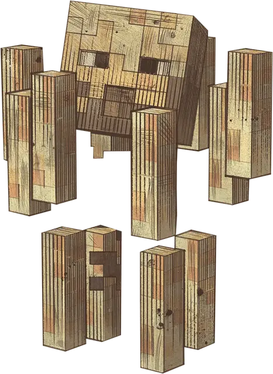

Ифрит
Blaze
Средний Элементаль, нейтрально-злой

Класс Доспеха 13
Хиты 75 (10к8 + 30)
Скорость 20 футов, летая 20 футов (только вертикальное передвижение; парит)
| мод | спас | ||
|---|---|---|---|
| СИЛ | 16 | +3 | +3 |
| ЛОВ | 17 | +3 | +3 |
| ТЕЛ | 16 | +3 | +3 |
| мод | спас | ||
|---|---|---|---|
| ИНТ | 6 | −2 | −2 |
| МДР | 10 | +0 | +0 |
| ХАР | 7 | −2 | −2 |
Сопротивление урону немагический дробящий, колющий, рубящий
Иммунитет к урону огонь
Иммунитет к состояниям захват, истощение, окаменение, опутанность, отравление, паралич, сбивание с ног
Чувства тёмное зрение 60 футов, пассивное Восприятие 10
Опасность 5 (1800 опыта)
Бонус мастерства +3
Особенности
Огненный стержень. Когда хиты ифрита падают до 0, он исчезает в облаке дыма и с 50-процентной вероятностью оставляет после себя светящийся жезл стоимостью 100 зм. Жезл излучает тусклый свет в радиусе 5 футов. Действием существо может попытаться сломать стержень, преуспев в проверке Силы Сл 14. Сломанный жезл высвобождает свою огненную энергию в сфере радиусом 5 футов с центром на себе. Каждое существо в этой области должно совершить спасбросок Ловкости Сл 14, получая 6 (1к12) урона огнём в случае провала или половину этого урона в случае успеха.
Аура жара. Любое существо, которое начинает свой ход в пределах 5 футов от ифрита, получает 3 (1к6) урона огнём.
Освещение. Ифрит излучает яркий свет в радиусе 20 футов и тусклый свет в радиусе еще 20 футов.
Восприимчивость к воде. Ифрит получает 1 урона холодом за каждые 5 футов, которые он проходит по воде, за каждый галлон воды, вылитый на него, или всякий раз, когда оно начинает свой ход под дождём.
Действия
Мультиатака. Ифрит совершает три атаки Огненной погибелью.
Огненная погибель. Рукопашная или дальнобойная атака заклинанием: +6 к попаданию; досягаемость 5 футов или дальность 60 футов, одна цель. Попадание: 8 (1к10 + 3) урона огнём, и цель загорается, если это существо или легковоспламеняющийся предмет. Пока существо не погасит огонь действием, горящая цель получает 3 (1к6) урона огнём в конце каждого своего хода.
Описание
Ифриты — это элементальные существа, которые собираются в крепостях Нижнего мира. Они плавают на небольшом расстоянии над землей, и вокруг каждого из них вращаются три набора светящихся стержней. Когда ифрит уничтожается, иногда остается один из этих стержней. Огненные стержни — источник огромной энергии, которую, если тщательно растолочь в порошок, можно использовать для варки зелий и создания других магических предметов.
Ифрит атакует, выпуская три огненных шара из своего огненного ядра. Этот огонь поджигает существ и легковоспламеняющиеся предметы. При необходимости ифрит поднимается в воздух, чтобы лучше видеть и легче нацеливаться на своих врагов.